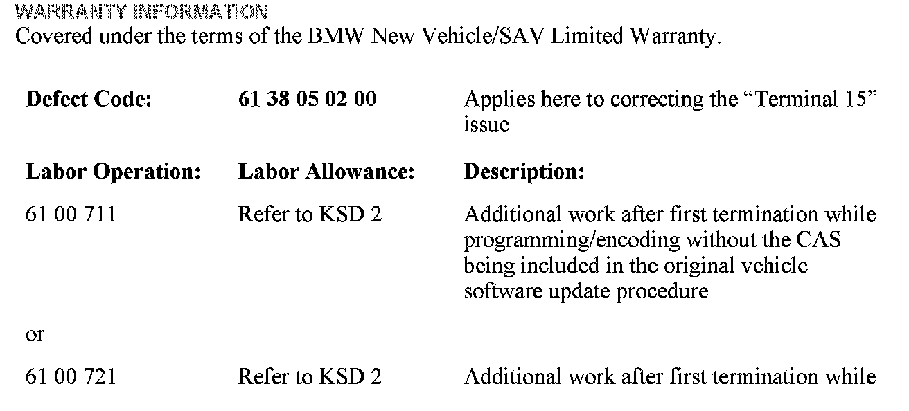
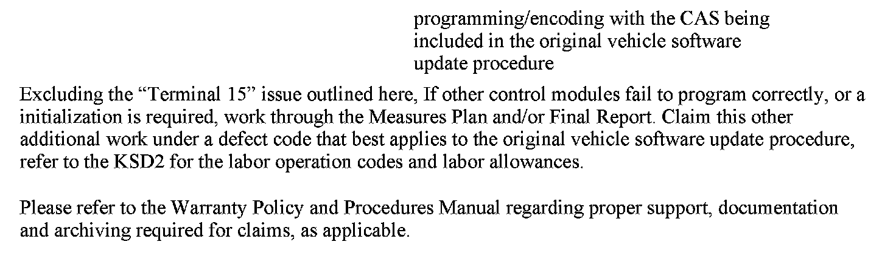
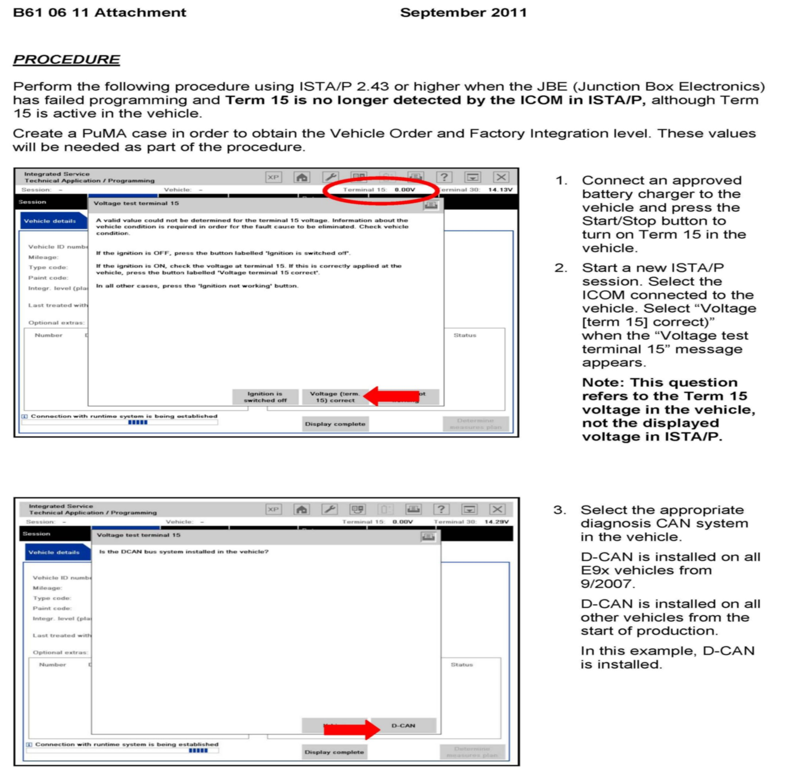
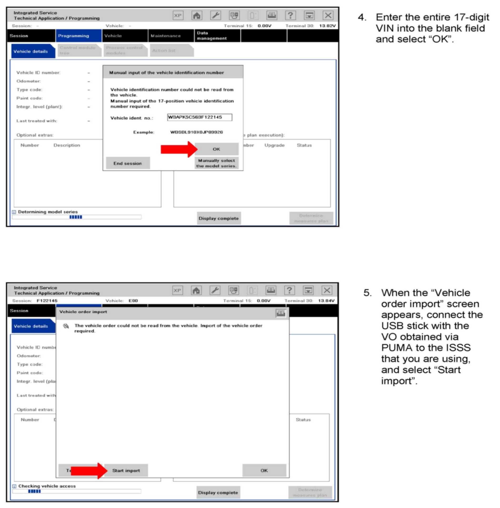
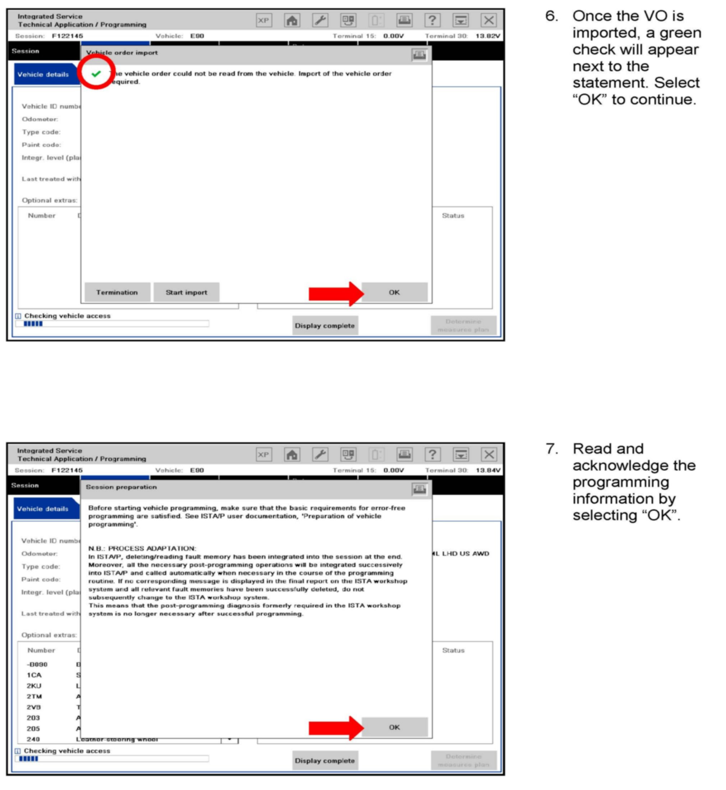
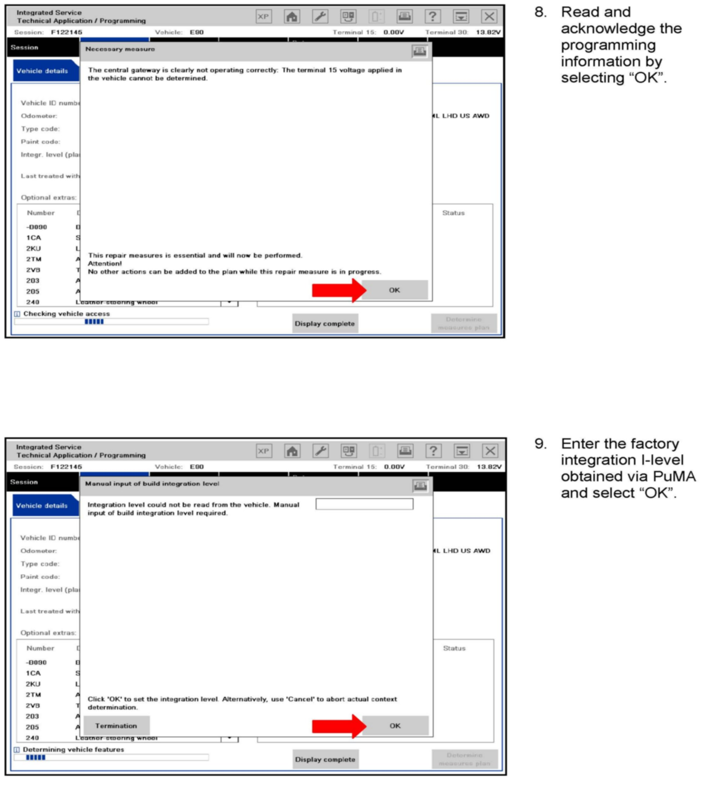
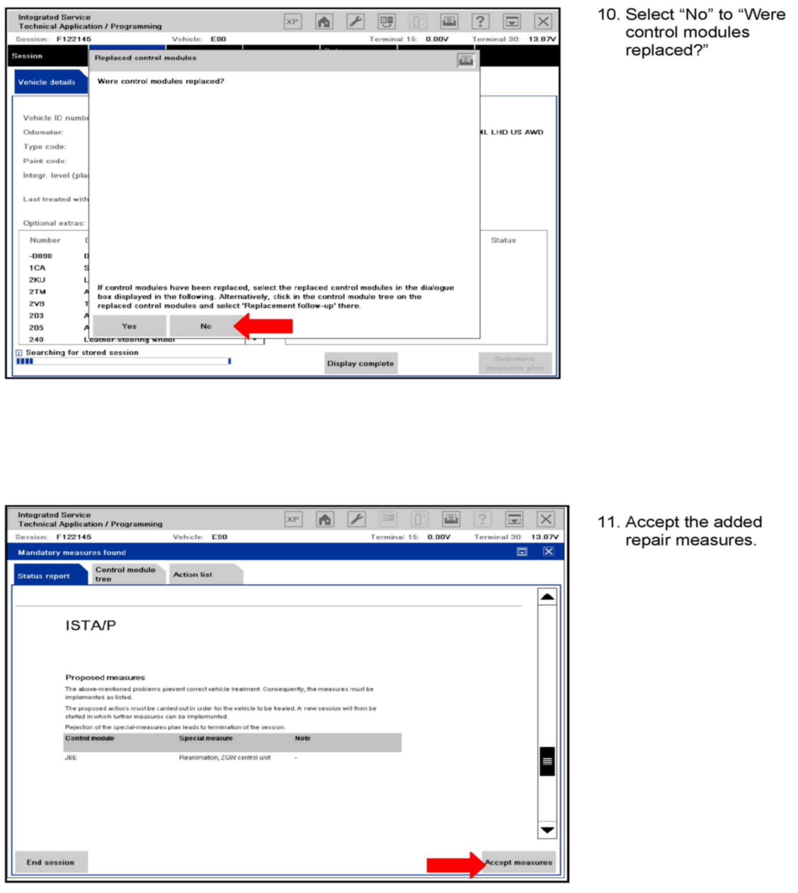
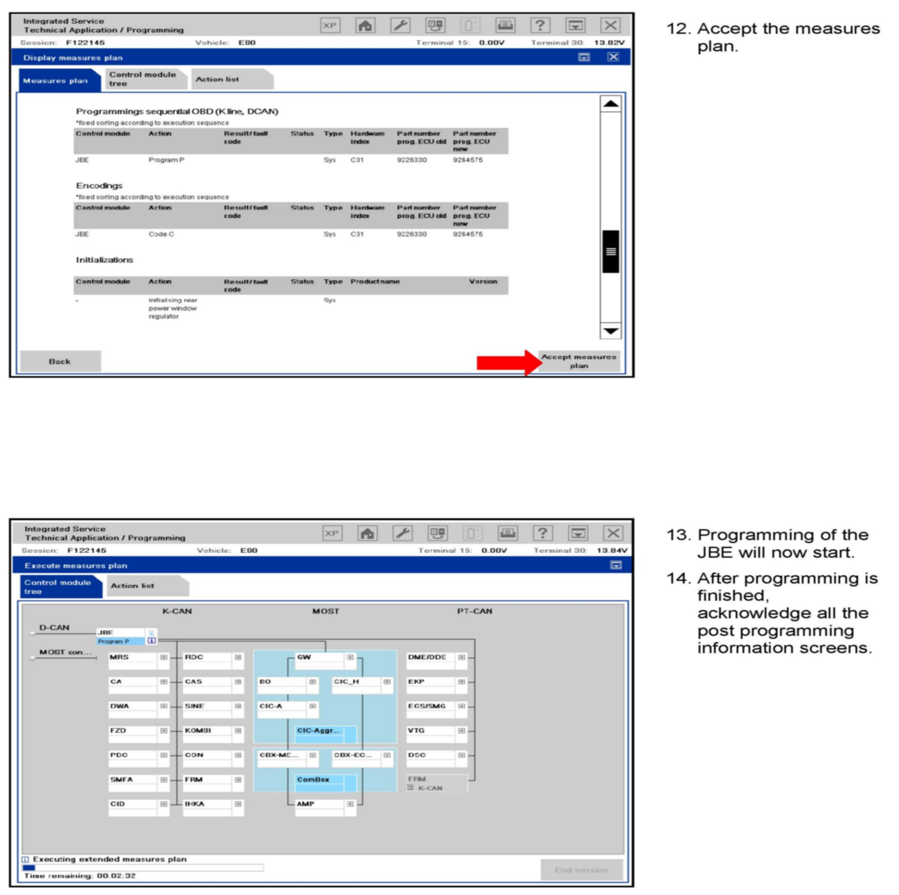
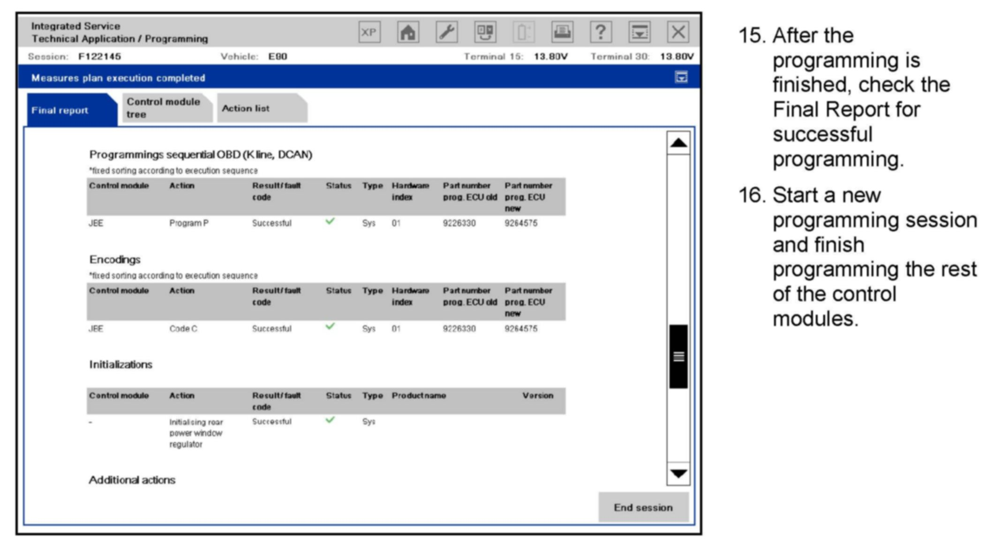

Computers/Controls - JBE Fails Programming
SI B61 06 11General Electrical Systems
September 2011
Technical Service
SUBJECT
JBE Fails Programming and Terminal 15 Not Recognized at ICOM
MODEL
E82, E88 (1 Series)
E90, E91, E92, E93 (3 Series)
E70 (X5)
E71 (X6)
E72 (ActiveHybrid X6)
SITUATION
During a software update of the vehicle (as part of another repair situation), the JBE (Junction Box Electronics) module fails programming. Terminal 15 is then no longer recognized at the ICOM (Integrated Communication Optical Module).
Note:
Terminal 15 does function properly in the vehicle, but both ISTA (Integrated Service Technical Application) and ISTA/P (Integrated Service Technical Application / Programming) do not recognize Terminal 15 as being on.
CAUSE
Software error
CORRECTION
Follow the procedure to perform the specific "additional work," as outlined in the attachment to this Service Information, for "Reanimation of the JBE" with ISTA/P 2.43.0 or later.


WARRANTY INFORMATION
ATTACHMENTS







B610611 Procedure